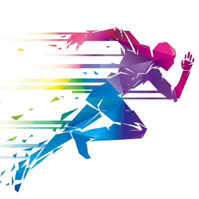
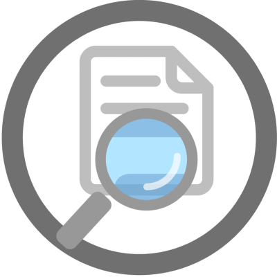
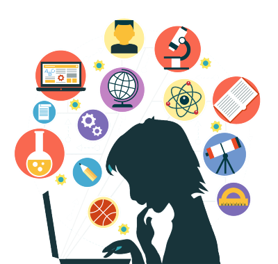

Hello!
I am Pratyush
Nice to meet you

I am an Engineer and a Programmer.
I am on a never-ending quest of Learning
How can I help you?
I can design what you want
I can help you out in the creation of an idea, design a roadmap, and prepare the skills and resources that will be needed for its realization.
I can develop what you need
I can help you understand the requirements of your ideas, put in a tonne of effort and turn them into reality.
Here are my
Here are the Skills that will help me help you

Machine Learning
Regression Analysis Classification Techniques Clustering Techniques scikit-learn pandas NumPy Natural Language Processing Artificial Neural Network Keras MatplotlibHere is why you would like to hire me
Hard Working
Hard work is one of my best talents. Through rigorous dedication and determination, I can find solutions to a wide variety of problems. If I don't know the answer to a problem, I give my all in learning the methods to solve the problem.
Eye for Details
Working in various fields, designing and developing, publishing various research articles have enabled me to have an eye for the finer details that are easy to miss.
Jack of All Trades
Over the course of my academic life and employment, I came across various problems that required a different method of approach. These had to be dealt with differently, thus I had to go out of my way to learn various skills needed for the particular task. The various skill sets that I know have made me a very dynamic person when solving problems. Working in various fields, designing and developing, publishing various research articles have enabled me to have an eye for the finer details that are easy to miss.
Quick Learner

Due to my hard work and experience with various domains, I can learn a new skill very fast and very easily as I most likely have already come across similar technology so that I can relate it and learn easily.
If you want to know more about me, please feel free to
Ever since I was a kid, the world fascinated me as it unfolded its culture, history and technology. I developed a knack for building things. This led me to take Instrumentation Engineering during my college days. One of the biggest achievements of my life was getting selected for the Master's program in one of the major institutes in the country. Here I learned the art of research and understood the ways to efficiently expand my knowledge base. I am currently learning to use Flutter for a pet project of mine.

Education
Masters in Biomedical Engineering (M. Tech) with Specialization in Medical Electronics and Instrumentation, National Institute of Technology, Rourkela
Bachelors in Applied Electronics and Instrumentation Engineering (B.Tech), Biju Patnaik University of Technology (BPUT)
Publications
Patnaik, Pratyush Kumar, Suraj Kumar Nayak, Anilesh Dey, Sirsendu Sekhar Ray, and Kunal Pal. "Development of a wireless intravenous drip rate monitoring device." International Journal of Sensor Networks 29, no. 3 (2019): 159-170. Sharma Ankit, Pratyush K. Patnaik, Seemadri Subhadarshini, Suraj K. Nayak, Sirsendu S. Ray, D. N. Tibarewala, and Kunal Pal. ”Designing of a Low-Cost Optical Density Meter for Medical Applications.” In En- vironmental, Chemical and Medical Sensors, pp. 271-285. Springer, Singapore, 2018. Nayak Suraj K., Karan Pande, Pratyush K. Patnaik, Shankar J. Patel, Arfat Anis, Anilesh Dey, and Kunal Pal. ”Understanding the effect of cannabis abuse on the ANS and cardiac physiology of the Indian women paddy-field workers using RR interval and ECG signal analyses.” In Asia- Pacific Signal and Information Processing Association Annual Summit and Conference (APSIPA ASC), 2017, pp. 333-341. IEEE, 2017. Pande, Karan, Ashirbad Pradhan, Suraj Kumar Nayak, Pratyush Kumar Patnaik, Biswajeet Champaty, Arfat Anis, and Kunal Pal. "Development of a voice-controlled home automation system for the differently-abled." In Bioelectronics and Medical Devices, pp. 31-45. Woodhead Publish- ing, 2019. Patnaik, Pratyush K., Paresh Mahapatra, Dibyajyoti Biswal, Suraj K. Nayak, Sachin Kumar, Biswajeet Champaty, and Kunal Pal. "Development of a low-cost color sensor for biomedical applications." In Bioelectronics and Medical Devices, pp. 15-29. Woodhead Publishing, 2019. Patnaik, Pratyush K., Suraj K. Nayak, Ashirbad Pradhan, V. Amrutha, Champak Bhattacharya, Sirsendu S. Ray, and Kunal Pal. "Light-fidelity based biosignal transmission." In Bioelectronics and Medical Devices, pp. 1-14. Woodhead Publishing, 2019. Sharma, Vivek, Pratyush Patnaik, K. Senthilguru, Suraj K. Nayak, Irshaan Syed, Vinay K. Singh, Preetam Sarkar, Goutam Thakur, and Kunal Pal. "Preparation and characterization of novel tamarind gum-based hydrogels for antimicrobial drug delivery applications. " Chemical Papers 72, no. 8 (2018): 2101-2113.Interest and Activities
Drop by for a chat now and then
+91-9583834186
+91-7978236726
pratyush130293@gmail.com
pratyushkpatnaik@gmail.com
This site was made completely made using HTML, JS and CSS. Icons made by Freepik from www.flaticon.com